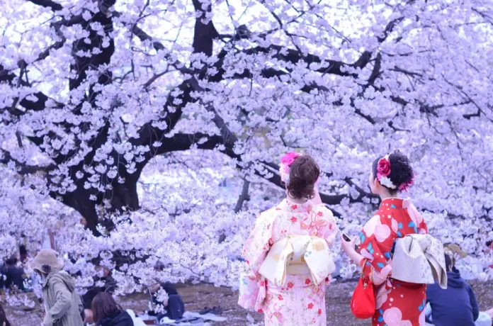

↓
Friendship Journey Passport
To discover the beauty of Japan through a journey created with appreciation.
東京・日本
Perfect for exploring.
LIVE TOKYO TIME
Every photograph tells a story that words could never fully express.
A wonderful day together.
Smiles that came naturally.
Moments worth remembering.
Another beautiful chapter.
Every tradition tells a story. Discover the customs, festivals, and timeless beauty that make Japan unforgettable.

Celebrating the beauty of cherry blossoms is one of Japan's most cherished traditions.
Dating back over a thousand years, Hanami began among the Japanese nobility.
Ueno Park, Tokyo
Late March – Early April
Sakura flowers bloom for only about one week.
ありがとう
Every friendship is built on little things that become unforgettable over time. Here are a few qualities that make you such a wonderful best friend.
You have a gentle heart that makes people feel comfortable, welcomed, and appreciated.
Your smile carries warmth that brightens ordinary days and reminds everyone to enjoy life's simple moments.
Your admiration for Japan inspires this little website. I truly hope you'll visit its beautiful places someday.
Thank you for every conversation, every laugh, and every memory that reminds me how valuable genuine friendship really is.
手紙
Dear Rachel,
Thank you for being such an amazing best friend. This website is simply a small gift inspired by something you truly love—Japan.
Every cherry blossom, every lantern, every peaceful place here was chosen with the hope that it would bring a smile to your face.
I sincerely hope that one day you'll walk beneath real sakura trees, visit Kyoto, admire Mount Fuji, and experience the beauty of Japan you've always appreciated.
Until then, may this little corner of the internet remind you that genuine friendship is something to treasure.
Your Best Friend | EJRH
日本の旅
Since Japan holds a special place in your heart, here's a little journey through places I hope you'll experience one day.

Walk beneath thousands of blooming cherry blossoms while peaceful temples tell stories centuries old.

Watch Japan's most famous mountain rise above the clouds during sunrise.

Wander through thousands of red torii gates that create one of Japan's most unforgettable paths.

Meet the friendly deer that freely roam one of Japan's most peaceful parks.
Every place, tradition, and season tells a story. Here are a few beautiful facts that make Japan a truly special country.
Cherry blossoms usually bloom for only one to two weeks each year. Their short life reminds people to treasure every beautiful moment.
"Ichigo Ichie" means every meeting is unique and should be treasured, because it can never happen exactly the same way again.
Mount Fuji is Japan's tallest mountain and one of the country's most beloved symbols.
A torii gate marks the entrance from the ordinary world into a sacred place.
Sushi is one of Japan's most famous foods. Its preparation values freshness, simplicity, and careful craftsmanship.
Matcha is finely ground green tea used in traditional tea ceremonies, symbolizing harmony, respect, purity, and tranquility.
Japan's famous bullet trains can travel at over 300 km/h while maintaining remarkable punctuality and safety.
In Nara Park, friendly deer roam freely and are considered messengers of the gods in Japanese tradition.
Castles like Himeji Castle were built not only for defense but also as symbols of beauty, power, and history.
Summer fireworks festivals, called hanabi, bring families and friends together to celebrate warm evenings under colorful skies.
The kimono is Japan's traditional clothing. Its elegant patterns and colors often reflect the seasons and cultural traditions.
Toss a coin into the sacred spring and let the water carry your wish.
Toss a coin into the spring...
Every blossom reminds us that beautiful moments are precious. Sit beneath the Sakura Tree and let your dreams bloom.
May your dreams bloom beautifully.
また会いましょう